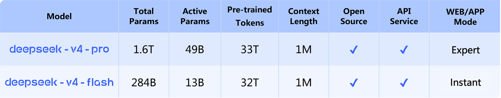

DeepSeek-V4-Pro

一页建立坐标
| 维度 | DeepSeek-V4-Pro |
|---|---|
| 发布 | 2026-04-24，Preview checkpoint |
| 参数 | 1.6T total / 49B activated，MoE |
| Context | 1M；Think Max 建议至少 384K |
| 权重精度 | routed experts FP4，其余多数参数 FP8 |
| 架构 | CSA + HCA hybrid attention，mHC，Muon |
| 预训练 | >32T tokens |
| 后训练 | 领域专家 SFT + GRPO → on-policy distillation |
| 模式 | Non-think / Think High / Think Max |
| 定位 | 知识密集、复杂 reasoning、长上下文与高难 agent 的旗舰 |
| 后继 | DeepSeek-V4-Pro-0813，正式替代 Preview |
为什么 Pro 不是“把 Flash 扩大”这么简单
Flash 与 Pro 共享架构方向，但总参数从 284B 拉到 1.6T，激活参数从 13B 拉到 49B。差距最明显地落在不能单靠多想补回来的知识项：SimpleQA-Verified 的 Max 分数是 57.9 对 34.1，Chinese-SimpleQA 是 84.4 对 78.9。复杂 agent 也受益于更大的知识与策略容量：BrowseComp 83.4 对 73.2，Terminal Bench 67.9 对 56.9。
与此同时，SWE Verified 只差 1.6 分，GPQA Diamond 只差 2.0 分。这说明 Flash-Max 已能在结构化 reasoning 和代码修复上逼近 Pro，但开放世界知识检索与最长程工作流仍更吃模型容量。
百万上下文：V4 的架构主命题
官方将 CSA 与 HCA 组合为 hybrid attention：前者对长历史做稀疏选择，后者压缩每个 token 需要保存的注意力状态。以 V4-Pro 对比 V3.2，1M context 下单 token inference FLOPs 降至 27%，KV cache 降至 10%。

这组数字比“支持 1M”本身更重要。agent 需要持续保留工具结果、代码状态、失败记录和计划；如果 KV cache 不降，context window 越长，并发反而越差。V4 的设计让长上下文成为可部署能力，而不只是评测能力。
mHC 与 Muon 为什么也值得单记
- mHC：把 hyper-connection 引入受约束的流形，目标是在增加连接表达力时维持信号传播稳定。
- Muon：用于更快收敛与训练稳定；在 1.6T 总参数规模下，optimizer 已经是 scale-up 方案的一部分。
- FP4 experts：后训练权重把路由专家压到 FP4，其余多数参数为 FP8；这是 checkpoint 发行形态，而不是简单的全模型低比特量化。
后训练：先让专家分化，再做统一
官方披露的流程不是单一混合数据池：
- 按领域训练独立专家，每个专家经历 SFT 与 GRPO。
- 让统一模型在自身 on-policy 轨迹上吸收专家输出。
- 得到一个可在三档 reasoning effort 间切换的通用 checkpoint。
这个方案试图解决大模型多能力后训练的冲突：代码、数学、搜索、工具调用的 reward 与轨迹结构不同，先独立优化更容易；最后若只做离线蒸馏，学生会在从未访问的状态上模仿，on-policy consolidation 则让教师反馈落在学生真实分布中。
关键结果应该怎样读
| Benchmark | Pro Non-Think | Pro High | Pro Max | Flash Max | 判断 |
|---|---|---|---|---|---|
| SimpleQA-Verified | 45.0 | 46.2 | 57.9 | 34.1 | Pro 的知识容量优势最大 |
| GPQA Diamond | 72.9 | 89.1 | 90.1 | 88.1 | 高档 reasoning 是主要增益来源 |
| LiveCodeBench | 56.8 | 89.8 | 93.5 | 91.6 | Max 达到很强代码推理上限 |
| MRCR 1M | 44.7 | 83.3 | 83.5 | 78.7 | High 已吃到多数长上下文收益 |
| Terminal Bench 2.0 | 59.1 | 63.3 | 67.9 | 56.9 | 长程终端任务随预算稳步提升 |
| SWE Verified | 73.6 | 79.4 | 80.6 | 79.0 | Flash 已相当接近 |
| BrowseComp | — | 80.4 | 83.4 | 73.2 | Pro 更适合开放世界检索 |
| MCPAtlas | 69.4 | 74.2 | 73.6 | 69.0 | Max 并非每项都优于 High |

最后一行尤其重要：reasoning effort 不是单调增益旋钮。MCPAtlas 上 High 略高于 Max，类似波动也出现在少数知识项上。增加思考会改变轨迹分布、工具时机与输出长度，评测必须同时报告成本和稳定性。
与同期 frontier 的位置
官方表中，V4-Pro-Max 的 LiveCodeBench 93.5 与 Codeforces 3206 很强；SWE Verified 80.6、BrowseComp 83.4 也进入同期 frontier 区间。但它并非全面领先：HLE 37.7、Apex 38.3 与 Terminal Bench 67.9 仍落后相应最强闭源结果。
更准确的结论是：V4-Pro 把开放权重模型带到多数 reasoning / coding / agent benchmark 的 frontier 邻近区，优势集中在代码、中文与可部署的 1M context；知识和部分真实环境任务仍存在差距。
部署与提示格式
官方仓库没有 Jinja chat template，而是提供独立 encoding 实现；它支持把 OpenAI-compatible messages 编码为模型输入，并解析 reasoning_content。不能默认拿通用 apply_chat_template 直接替代。
pythonfrom encoding_dsv4 import encode_messages prompt = encode_messages( [{"role": "user", "content": "检索证据并完成代码修改"}], thinking_mode="thinking" )
- 官方本地采样建议为
temperature=1.0, top_p=1.0。 - Think Max 建议 context 至少 384K，以容纳长推理与工具轨迹。
- Preview checkpoint 已被八月的 DeepSeek-V4-Pro-0813 取代；生产比较不能停留在四月分数。
公开边界
官方已公开规模、上下文、混合注意力方向、mHC、Muon、>32T 预训练量、两阶段后训练框架与完整官方 benchmark。尚未公开：数据来源配比、CSA/HCA 的全部实现超参、专家域划分、GRPO reward、rollout 数量、蒸馏损失组合与训练算力。
这些缺口不影响对模型定位和架构主张的判断，但会限制可复现性；因此不能把“知道用了 GRPO”写成“已经知道如何复现 V4 后训练”。
对 Agent Training 的启发
建议复现实验：
- browser / code / shell 三专家分别 RL，再以同一学生做 on-policy 与 off-policy 蒸馏对照。
- 记录能力合并前后的 specialist win-rate、通用能力遗忘和跨工具迁移。
- 对 High 与 Max 做成本归一化，比较每 1M generated tokens 的 solved tasks，而不只比较 accuracy。
- 在长轨迹中测 CSA 检索错误：关键历史被稀疏注意力漏掉时，是否能由外部 memory 或 verifier 补救。
证据边界
本页达到完整精读标准；所有分数均来自 DeepSeek 官方 harness，DSBench 等内部集不能独立复现，跨厂商列也可能存在环境、prompt、sampling 和 timeout 差异。结论只用于理解官方 checkpoint 的能力结构，不替代第三方统一评测。
一手资料
- 官方 Hugging Face model card
- DeepSeek-V4 Technical Report（arXiv:2606.19348） — 同时覆盖 V4-Pro 与 V4-Flash 的 family report
- 本地 HF model card
- DeepSeek-V4 technical report 源码
- 官方 Preview 发布页
- V4 family 总览
待跟踪
- [ ] 复测 Pro High / Max 的 accuracy—latency—token 三维 Pareto。
- [ ] 等官方释放 DeepSeek Harness 后重现 agent 表格。
- [ ] 对照 DeepSeek-V4-Pro-0813，量化正式 checkpoint 的后训练增益。